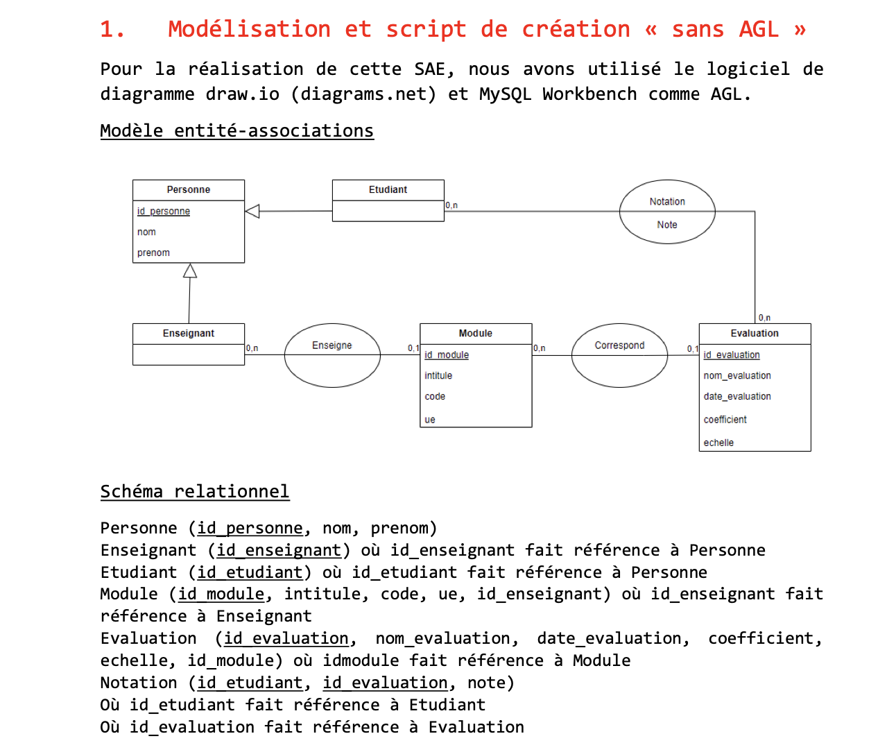

Cette page complète mon portfolio principal. Elle rassemble des visuels, des livrables et quelques supports pour illustrer plus concrètement certains projets présentés sur la page principale.
Alternance SGGN — Qlik Sense
Cette partie regroupe deux visuels qui illustrent mon travail sur l’infocentre : un modèle de données et un exemple de tableau de bord. L’objectif n’est pas de tout montrer, mais de donner un appui visuel à ce qui est expliqué dans le portfolio principal.
Modèle de données utilisé dans Qlik Sense, notamment pour la liaison avec le référentiel APE.
Exemple de tableau de bord Qlik Sense utilisé pour le suivi et le pilotage des conventions.
Projet Dataviz
Projet en équipe autour d’une question simple : existe-t-il une relation entre le marché immobilier et la fréquentation des gares ?
Avec le recul, ce projet m’a surtout appris que la visualisation n’a de valeur que si le travail de préparation, de nettoyage et de vérification des données a été fait sérieusement en amont.
SAE 101
Premier travail autour de PostgreSQL et Metabase, à partir de données étudiantes. Ce projet m’a surtout appris à ne pas lancer des requêtes sans avoir d’abord une vraie question d’analyse en tête.
Exemple de visualisation réalisée dans Metabase lors du travail exploratoire sur les notes des étudiants. Le nuage de points met en relation la moyenne des notes et leur écart-type afin d'observer l'hétérogénéité des évaluations.
SAE 201 — Conception de base de données
Dans cette SAE, l’objectif était de concevoir une base de données complète à partir d’un modèle conceptuel. Nous avons d’abord réalisé la modélisation entité‑association avec l’outil draw.io, puis nous avons implémenté la base dans MySQL Workbench.
Ce projet m’a surtout permis de mieux comprendre la logique entre les différentes entités : étudiants, enseignants, modules, évaluations et notes. La difficulté principale était de bien structurer les relations entre les tables afin de conserver une base cohérente.

Extrait de la modélisation entité‑association réalisée pour la SAE 201. Ce schéma montre les relations entre les étudiants, les enseignants, les modules et les évaluations.